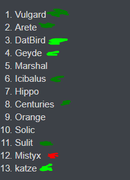

can i talk about how this is just a repeat of hydra game except less people are talking about my slot here
fuck this shit

can i talk about how this is just a repeat of hydra game except less people are talking about my slot here
fuck this shit
eh im just gonna post it now cause im too lazy to update it and my brain is shutting down rapidly
Legacy post just in case I miss EoD and fucking DIE TRAGICALLY
Only putting ½ (rounded down) people above null since that’s how many villagers we need for "“lock” (including myself as the last one)
Villagers
Vulgard
Arete
Both are here for the same reason, they both are incapable of posting the way they have this game as a wolf. Neither of these reads should really ever be tinfoiled, imo, especially Vulgard. Arete is probably more capable of overperforming here, they’re also less blatantly in V meta, but… no. They’re both villagers. And if either of you groan and say “this is why i should alt” or “katze reads bad because im a wolf! lol!” then you’re cringe and should take a seat in an imaginary box. (There’s an air hole, don’t worry)
Also Villagers but with slightly less confidence
Icibalus - explained in #1287, since then I think their posts have still been consistently good which they’re probably just not capable of doing so consistently as a wolf here. I could probably swap this slot with Arete, but having Arete and Vulgard next to eachother is funnier than an accurate readlist, and they’re both probably just villagers anyway so does it matter?
sulit - explained in #2353, keep in mind that sulit D1 reads are rarely ride or die but I’m still feeling pretty confident in this one? The longer the game lasts the more obvious their alignment will be, but again. sulit going above and beyond is somewhat out of character, and in a setup like D6 with this playerbase? Just a villager in a majority of worlds. Especially because her reads are good, which is her true towntell.
>rand V
Marshal - I don’t really want to ever gamble a game on Marshal’s alignment. That’s not a good thing to gamble with. With that said, I… still kinda think they’re a villager. I’m trying to ignore mechanical bullshittery overall, but I think the way they’ve handled mechanics this game has been somewhat villagery. I would warn to not clear for this, as they did some funky shit in Hydra Game 5 as a wolf, and that game just now ending is probably a good resource to read him in this game. I am not doing this today, but would recommend nerds to do so. Anyway, I thought a couple specific posts of his were firmly in V meta (no, I will not point them out, yes, I understand that makes this read worth less, no, I don’t care) They’re not out of their scumrange by any means, it’s a large range, but I don’t think they’re playing this game the way they would as a wolf. Similar to Geyde’s read on Marshal in #428, except better because it’s not just “he’s not trying”, he is trying - but not really in a way that advances his wincondition strongly.
orangeandblack5 - My least confident clear, out of respect for their wolfgame and acknowledgement that, if a wolf, their wincon is very likely going to include bussing as a byproduct of this specific game. With that said, I don’t hate their posts and they’re by meta >>>rand V due to treatment of Mist (and her treatment of orange) but again. I respect the wolf game enough to not put this higher, despite reasonable arguments to do so. Which is kinda cringe, given orange is a bad player, but whatever
Not in my lock/The Discard Pile
Centuries - One of my stronger townreads early on, but has dropped off quite a bit? I dunno, I think their early D1 was villagery enough and that they had a few reads that felt vaguely out of the wolfrange I percieve them to have. sulit having a relatively confident sounding townread on this slot is a point in the french boys favor as I feel like she’s probably more competent at reading him than I am, but I’m still a bit wary of just blindly following it because it’s a D1 read with no meat to the bone. Which might be silly. Dunno how strong their abilities to soulread eachother are. Dropoff might not be as concerning as I’m making it and they’re still likely a villager but I feel slightly stronger about Marshal/orange as of now, mostly due to the lack of consistency in villager energy. Might be unreasonable. However, french bad. oui oui baguette omelette fu fromage junior est pour les petites chiennes jaja
DatBird - DatBird being this low on a readlist is concerning, they definitely need to be monitored closely on D2. If they’re a villager, it’ll be very apparent, if not, it’ll probably be apparent. Honestly though? GTH they’re a villager. They’re not a shining beacon of it, but they don’t feel like a wolf. They just don’t feel like a villager either. Low standards, I know, but I don’t need to write a lot of words on Dats’ alignment so I’m not going to. Figure it out tomorrow. 
Solic - Opener was villagery, but honestly? I was going to do a full ISO on this but I’m tired and can’t force myself to bring it to completion, but I glance over it in #2396. I don’t think this is impossible to be W/W with Mist. Super turbo skimming their ISO, the read on Dat in 631 is probably >rand V or W/W because Dat was not seen very postively in thread and it isn’t necessary for W!Solic to make the post about V!Dat and the thought processes in this post are decent. Defending the read in later posts strongly reinforces this imo. Maybe they’re defending it too strongly? Their turnaround on Mist in 1799 is concerning as there’s literally zero visible buildup to it, which could be NAI as there’s little Solic presence in thread at this time and they could have just caught up and saw it (which doesn’t not fit their posting style)
Geyde - As I glossed over in #2231, their play is… low energy. For pretty much any other player in this list, I’d just call them a wolf for it. At surface value their posts are pretty decent, but when I read his ISO under the guise that they are a wolf, their posts… fit? That’s a style of read I’ve only tried a few times so I don’t know how strong this read really is, although it was a large portion of me turning around on Mixodya in Hydra Game 3 so maybe I should weigh this more? Dno. I did move this slot down two spaces since I started typing this if that helps tho  also posts involving Mist don’t not feel W/W at all so idk man
also posts involving Mist don’t not feel W/W at all so idk man
>rand W
Hippo - I know orange argued they’re probably not W/W with Mist, and I’m too lazy to go in depth and figure out the validity of that claim, but at a skim I don’t think it’s impossible. I personally think that, regardless of Mist, their actions are just sorta wolfy. I think their overall handling of PRs is really fucking bad, and honestly could border TWTBAW if I believe in that being a real read (okay, I do, but every time I think it applies they’re not too wolfy to be a wolf, they’re just a fucking wolfy wolf. The amount of posts in their ISO that are just “bro wtf stop scumreading me” is a way bigger number than it should be.
Uncounterclaimed Wolf
Mistyx - ok but what if she’s a villager :wowee:
The odds of me actually being N1ed is probably somewhat low at this point, but it exists. I am writing a wallpost to obtain locktown status, though, so the wolves’ hand will be forced. Sucks for the wolves when wallposts are wielded this brutally, but my allegiance is plain and my strategy perfect. Get #rekt.
My level 0 solve is Solic/DatBird/Mist, because I think it’s highly likely that Solic and DatBird are both the same alignment and think Solic at a surface level can easily be W/W with Mist. Would kill DatBird first as I find it very unlikely that W!Solic treats V!DatBird the way they did. Luckily he’s an obvious read, so if he’s a villager it shouldn’t be necessary and you can probably just clear Solic with him – in which case I’d start looking closer at Marshal/orangeandblack5 as those are technically my most likely misclears.
I feel like I’m lacking wolfreads, and am relying too much on metareads. I told myself pregame to literally only metaread people because I thought it’d be funny, and then post-rand that it was stupid and I think I’m doing it anyway. Eh, whatever.
Gonna skim Mist ISO and do spew analysis but I kinda suck at this so take with many many grains with salt because lolkatze
I’m under the impression that spew from Mist beyond the JK claim should be taken with a grain of salt, although others’ impressions to the claim may be notable.
I also probably should have looked at spew before doing a readlist but shut up
I think her treatment of orange in #31 is >rand V for orange, in a bit of a tinfoiley “she’s mad at orange for causing a rerand and would probably yell at him in scumchat if buddies” way. The vote after might be a point for him but nah
Her agreeing with Conroys (probably joking?) scumread on me -> asking his read on me is probably AI for him but I genuinely don’t know in which direction I lean in, decent chance she was setting up for the “deep wolf conroy???” joke which would maybe be >rand W for Conroy but that seems too obvious to be true so idk (even tho 267 makes me think its true???)
oh vulgards spewed even more V by his treatment of her imo but lolvulgard
685 is probably just a W TMIing a V read
orange >rander V from a few posts scattered around
910 might be >rand W for conroy? this is half because “rule of 3” and half because “conroys approach to katze wasn’t good if you ask katze”
scumread on marshal in 1440 has no buildup someone figure out what that means
i just had a gamer thought
mists constant shading of me is probably indicative of the wolves wanting to ML me, which is >rand W for conroy suggesting a PL on me imo
4:40AM katze thoughts
mists shade of hippo in 1440~ is probably >rand V for hippo as, despite likely considering antispew at this point, it still does sound like she wants to thunderdome here which doesnt really make sense if W/W
wow thats literally all i have here
I’m too lazy to actually go up and do it, but pretend I scrolled up and moved Centuries down a bit and orange… probably about the same actually, the gap in the orange read and the sulit read is somewhat large. Unfortunately if the wolf strategy is “misyeet katze” then it’s not unlikely I survive, and this entire wallpost is a waste of time, but whatever. If someone CCs me later then they can be a lockwolf who beats me in a thunderdome because “katze PR claim? !!!” and that person will be Centuries because FRANCE BAD
Marshal is totally gonna call this post W!katze but Marshal is cringe
lolkatze writing a 11k character wallpost at 2-5AM
ftr conroy being unaware enough of gamestate to not know mist is essentially an outted wolf is probably a point in his favor
i expect literally nobody to read the above post but i am now locktown
in every game minus one game each we’ve correctly read each other
sample is like idk 8+ games i guess idk
fuck you
my favorite part about writing essays in the morning is that i can literally see my mind deteriorate the further down i go
probably gonna lurk thread for a bit until i fall asleep and hopefully wake up before EoD but not insanely likely as i need to catch up on sleep
ftr the moment i asked arete what their read on sulit was my mind basically went
vulgard is probably town
arete is probably town
if arete also agrees sulit is town
and sulit thinks im town
i can chill in thread instead of trying to fight agaisnt my lynch d2/d3/d4 because lmao im never getting endgamed im 100% ml fodder

go dunk on wolves my townie friends
ill be chilling in thread im still here just playing VIDYAS
if we have enough dominoing soulreads this game can be solved
are you sad that your partner’s dying centuries
it’s just kat and orange being spammers
because you didn’t do anything while people were being villagery
yes
that was my thoughts early on
i wanted to convey that fact
without sulit going
AHHHHHHH he’s trying to appeal to me on a personal level
i went to sleep 1600 posts in i come 800 posts later
i went down in katze’s reads
during my sleep
that doesn’t make you mafia but like
how do you expect yourself to not be poe when there are people in this game who have already posted significant reads, pushed on an outed wolf, etc., etc.
i am still super ambivalent about datbird, and that’s probably bad considering how he got towncored d1 as town last game i saw him play
and that was without people knowing he was datbird (at least ostensibly)
im literally getting sr’d because
u’re not posting > wolf conroy is frozen o_O
no dumbie im sleeping let me sleep not my fault game gets active at 5am france time
if the team is hippo/datbird/mistyx then this game is pepega
i feel that but also
you have to understand it’s normal
i need to read datbird again and figure out if he’s actually a wolf
maybe compare to that one hydra jk9 game where he was town and sussed
i posted
of course people are going to look better if they 200 post day 1 compared to my 50 posts of actual posting
not my fault fol has a distorted worldview where 50 posting day 1 is flaking
i still think hippo’s a wolf by the way and his vote on mistyx felt very bussy to me
this is true
i feel like i’ve posted way more than i needed to and i’m still in the bottom half
come to think of it it’s a very wolfy entrance post
this feels… off
i’m actually not sure if this is w/w? this post relies on the premise that wolf!hippo is capable of obvtowning himself, which he has… never been able to do. and i’m assuming mafia!datbird would know this
this feels more whiteknighty than anything
i think these posts make datbird/hippo not w/w
i don’t find it a realistic team based on the idea behind datbird’s posts here
he says something like “hippo will be obvious town as soon as he gets here” which is potentially tmi-ish but also blatantly false of datbird is hippo’s partner
if datbird is hippo’s partner, he’s also putting hippo on the spot knowing that hippo struggles to be omega towny as mafia… for no reason
you could read it as performative but he also defends his post later by saying “it’s dumb to vote a no poster” which once again suggests to me he might be tming hippo town and instinctively denying responsibility
it’s not super strong but it’s there
its normal to put me in lower ends of the readlist because im not as active
whats not normal is that nobody has iso’d me / even tried to find my alignment / quoted any posts that looked sus
this is the exact same thing as the hydra game once again
its easier to townread 300 posters
doesnt mean every 300 posters should be town read
its easier to scumread low posters
doesnt mean every lowposter should be scumread
actual fact
less than half the game has even voiced a read on me
why is that
i deny responsibility for the vote that killed you
that was my partner
ily appel
#justiceforgentle
i kinda want to kill datbird now
mafia datbird possibly spews hippo town
but i need to delve deeper